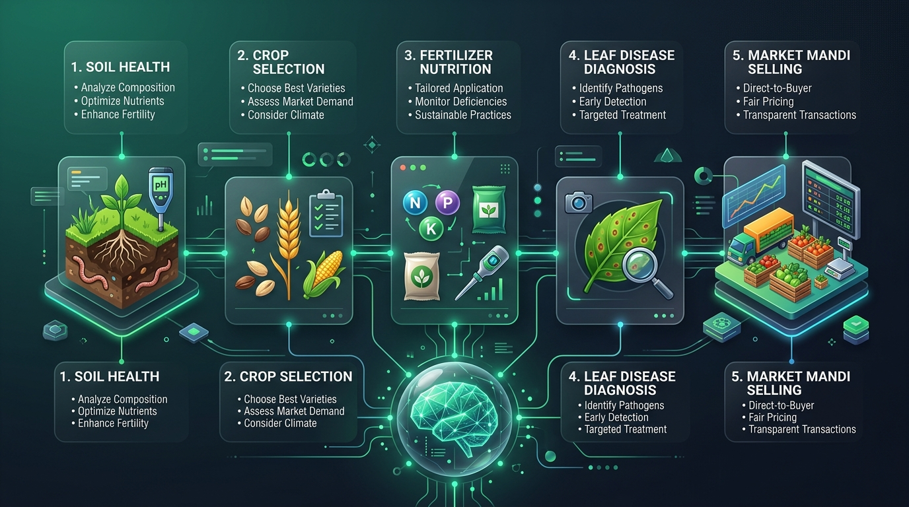
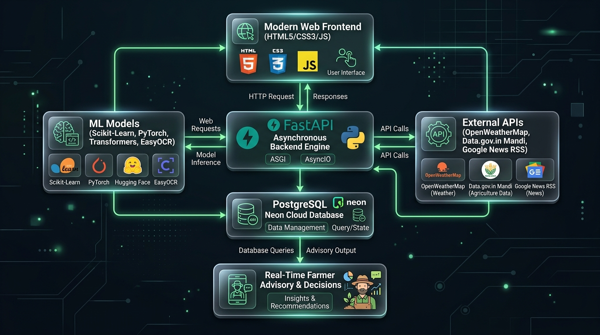
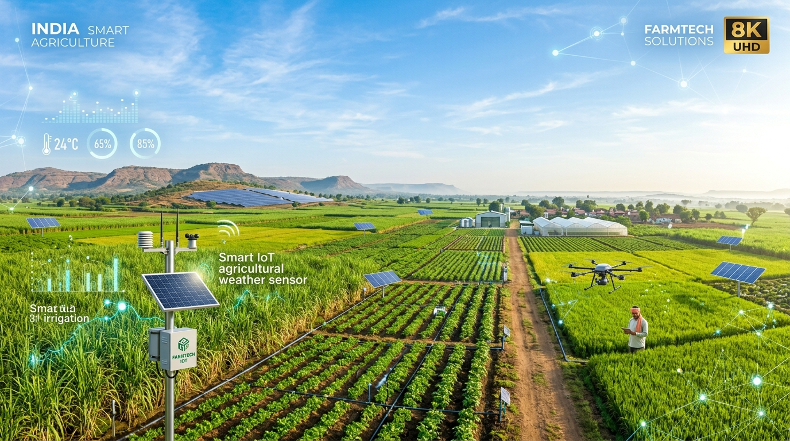

eco AI-Powered Decision Support for Farmers
SMART AGRICULTURE ASSISTANT
From Soil Testing to Mandi Selling — An End-to-End Precision Agriculture Platform Powered by Machine Learning, FastAPI & PostgreSQL
⚡ FastAPI Asynchronous Engine
🤖 Scikit-Learn ML Models
👁️ PyTorch MobileNetV2 Vision
📄 EasyOCR Document AI
🐘 PostgreSQL Cloud DB
📊 Live Mandi Market Analytics

alt_route The Agricultural Challenge
Unifying Fragmented Farming Decisions
Indian farmers navigate disconnected silos — soil labs, seed vendors, chemical dealers, disease outbreaks, and volatile mandi markets. Smart Agriculture Assistant bridges every stage into one intelligent workflow.
check_circle Soil Health: Automated lab report parsing via OCR
check_circle Crop Selection: ML-based suitability prediction
check_circle Fertilizer Plan: Precision NPK replenishment
check_circle Disease Defense: Computer vision leaf diagnosis
check_circle Market Selling: Mandi price forecasting & demand
sync_alt Continuous Decision Engine
End-to-End Pipeline
Input Data Source
Soil + Leaf + Mandis
Processing Model
Supervised ML + DL
Persistence Layer
PostgreSQL Neon DB
Advisory Output
Actionable Farmer Plan
Unified System Status
Connected & Live
terrain Step 1 · Soil Analysis
Soil Test Report OCR & Extraction
Farmers upload physical lab reports (PDF or images). Our OCR pipeline digitizes the document, extracting key chemical indicators into structured parameters instantly.
document_scanner Dual OCR Engine: EasyOCR & PyMuPDF parsing
speed Zero Manual Entry: Auto-populates advisory modules
verified Extracted Attributes: N, P, K, pH, Moisture, Soil Type
receipt_long OCR Extraction Output
POST /soil/upload
Nitrogen (N)
78 kg/ha
Phosphorus (P)
42 kg/ha
Potassium (K)
55 kg/ha
Soil pH
6.5 (Optimal)
Soil Moisture
32 %
Soil / Location
Loamy · Hyderabad
Extraction Status
100% Structured Data
psychiatry Step 2 · Crop Advisory
Machine Learning Crop Recommendation
Trained on multi-variate agricultural datasets, our ML model evaluates soil chemistry, regional temperature, humidity, pH, and rainfall to determine the optimal crop for maximum yield.
model_training ML Classifier: Random Forest trained on 22+ crop classes
cloud Live Weather: Real-time OpenWeatherMap API integration
database Audit Trail: History auto-saved to PostgreSQL
grass Crop Predictor
POST /predict
Input Nutrients
N:90 · P:42 · K:43
Agro-Climate
24.5°C · 82% Humidity
Soil pH & Rain
pH 6.5 · 202mm Rain
Live City Weather
Pune (25.0°C, Clouds)
Recommended Crop
🌾 Rice (Paddy)
science Step 3 · Crop Nutrition
Precision Fertilizer Recommendation
Prevents over-fertilization and nutrient imbalance. Our model takes soil type, target crop, moisture level, and existing NPK levels to prescribe the exact fertilizer formulation.
tune Targeted Nutrition: Balances Nitrogen, Phosphorus, Potassium
device_thermostat Climate-Aware: Incorporates live temperature & humidity
savings Economic Impact: Lowers input costs & boosts soil health
medication_liquid Fertilizer Engine
POST /fertilizer/predict
Soil & Crop Type
Sandy Soil · Maize Crop
Soil Moisture
38 %
Nutrient Levels
N:37 · P:0 · K:0
Live Weather
25.0°C · 55% Humidity
Recommended Fertilizer
🧪 Urea (46-0-0)
coronavirus Step 4 · Plant Pathology
AI Leaf Disease Detection & Treatment
Farmers capture a smartphone photograph of any symptomatic leaf. The PyTorch MobileNetV2 vision model identifies the exact disease and prescribes immediate treatment to safeguard crops.
biotech Deep Vision Architecture: MobileNetV2 Deep CNN
health_and_safety Clear Health Status: Healthy vs Pathogen Infected
healing Actionable Treatment: Specific fungicide and cultural remedies
center_focus_strong Leaf Vision Diagnosis
POST /disease/detect
Detected Pathogen
Tomato Early Blight
Model Confidence
31.31 % Top Match
Recommended Treatment
Remove infected leaves; apply copper-based or chlorothalonil fungicide; avoid overhead watering.
Status
⚠️ Pathogen Detected
insights Step 5 · Mandi Intelligence
Real-Time Mandi Analytics & Price Prediction
Direct integration with Data.gov.in Mandi API covering 8,444+ daily commodity transactions. Provides price comparisons across nearby mandis, 7-day trend analysis, demand signals, and buy/sell forecasts.
storefront Live Mandi Feed: 8,444+ records across 22 states
show_chart Price Trend & Demand: Historical regression & volume index
paid Buy/Sell Recommendation: Favorable selling window signals
currency_rupee Mandi Intelligence Engine
POST /market/price & /market/predict
Commodity & Mandi
Wheat · Pune Mandi
Current Modal Price
₹ 2,450 / Quintal
Price Trend Direction
↗ Upward (+4.2%)
Market Demand Index
High (Rising Trading Vol.)
AI Decision Signal
📈 Strong Sell Signal
newspaper Knowledge Stream
Live Agriculture News & Govt Schemes
Real-time aggregation of official government agricultural policies, Minimum Support Price (MSP) updates, welfare schemes, and market export opportunities.
feed Google News RSS Pipeline: Categorized auto-refresh
gavel Policy Tracking: MSP revisions and PM-KISAN subsidies
travel_explore Export Opportunities: Global and domestic crop trade
dynamic_feed Live Agricultural Headlines
GET /news/latest
MSP & Welfare Funds
Union Minister emphasizes timely release of Agriculture Welfare Funds across states
Market Reforms
Digital Mandi integration expands direct farmer-to-buyer sales across 22 states
Coverage Status
Live & Verified

developer_board Production Technical Architecture
Robust, Scalable & Cloud-Ready
🌐 HTML5 / CSS3 / Vanilla JS
⚡ FastAPI (ASGI / AsyncIO)
🤖 Scikit-Learn & PyTorch MobileNetV2
📄 EasyOCR & PyMuPDF
🐘 PostgreSQL Cloud (Neon DB)
☁️ OpenWeatherMap & Data.gov.in REST

verified Hackathon Demo Summary
FROM SOIL TO MARKET
One intelligent platform empowering Indian farmers with data-driven precision, higher yields, and maximum profitability.
rocket_launch Smart Agriculture Assistant · Ready for Production
volume_up
[01. Introduction] Welcome to Smart Agriculture Assistant — an enterprise-grade AI decision support platform built with Machine Learning, FastAPI, and PostgreSQL to empower Indian farmers.